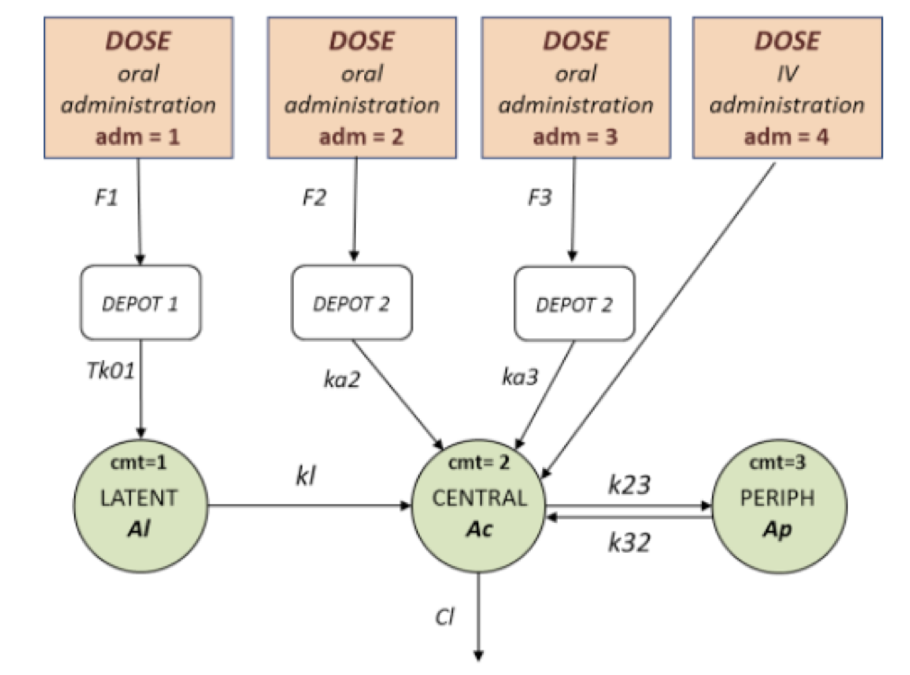
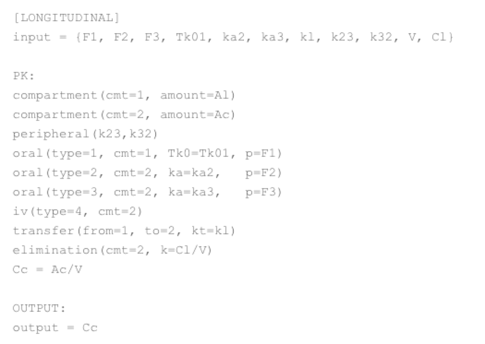

Probabilistic Programming Languages
Probabilistic Programming Languages (PPL) describe probabilistic models and the underlying mechanics to perform inference. PPL combines the inference capabilities of probabilistic methods with the representational power of programming languages.
Examples include Stan (Stats), VentureScript (ML, Robotics), Pyro (Deep Learning),...
Simple illustrative example
We consider in this example a coin. If this coin is biased, i.e. the probability that a coin toss leads to head is different than of tail, one interesting problem is to have an estimate of this inherent bias. A simple model for that would be to consider iid Bernoulli tosses, of parameter θ, where θ represents the bias of the toss. Rigorously it reads: p(toss = tail | θ) = 1 − θ.
The power of PPL makes this problem easily implementable. In Edward, a Python library for probabilistic modeling, inference, and criticism built on top of Tensorflow by Dustin Tran, Alp Kucukelbir, Adji B. Dieng, Maja Rudolph, Dawen Liang and David M. Blei, this problem can be written in a few lines as follows:
x = Bernoulli(probs=theta, sample_shape=10) #toss model
data={x: np.array([0, 1, 0, 0, 0, 0, 0, 0, 0, 1])}) #observed tosses
qtheta = Empirical(tf.Variable(tf.ones(1000) ∗ 0.5)) #posterior distribution variables
inference = edward.HMC({theta: qtheta}, #init HMC (black box HMC implemented in edward)
inference.run() #HMC runs
mean, stddev = edward.get_session().run( [qtheta.mean(),qtheta.stddev()])
After simply defining the prior on the bias θ (here uniform) and choosing a Bernoulli model for the tosses, the function edward.HMC() runs a Hamiltonian Monte Carlo Markov Chain in order to obtain unbiased samples from the posterior distribution of the random variable θ given the observed realizations. After sufficient transitions, the mean of those samples yields the desired estimated bias of the coin.
MlxTran Language for PK-PD Analysis
An example of probabilistic programming language designed for nonlinear mixed-effects models, particularly appealing to PK modeling, is MlxTran. It is a declarative, human-readable language for the description of the statistical elements of nonlinear mixed effect modeling found in pharmacology.
MlxTran is used for parameter estimation with Monolix and for simulation with Simulx . We recall the example of iv and oral administration using a PK model.

This complex model can be easily implemented using MlxTran where several abstractions are used to model the iv administration, the priors on the random effects and the compartmental structure of the model.

Some common models in MlxTran
Examples implemented models include the following:
- PK/PD model: several types of administrations (IV bolus, infusion, zero and first order absorption), any number of compartment (between 1 and 3), several elimination process (linear and Michaelis-Menten)
- PK double absorption model: combinations of absorption types and delays for two absorptions. The absorptions can be specified as simultaneous or sequential, and with a pre-defined or independent order.
- Target-mediated drug disposition (TMDD) model: TMDD models corresponding to different approximations, different administration routes, different parameterizations, and different outputs
- Time-to-event (TTE) model
- Count model
- Tumor growth inhibition model: test and combine different hypotheses for the tumor growth kinetics and effect of a treatment, allowing to fit a large variety of tumor size data